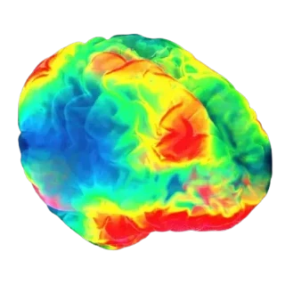
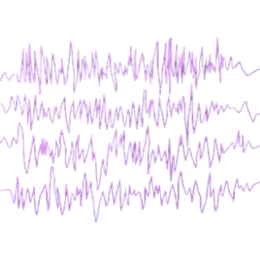
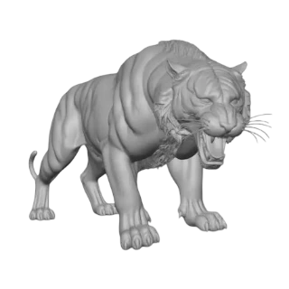

WiML @ NeurIPS 2026
Hierarchical representations for brain modeling
I designed an EEG encoder that compresses a recording in stages and keeps a separate readout at each one: fine spatial and temporal patterns in the early stages, global semantics in the deeper ones.


